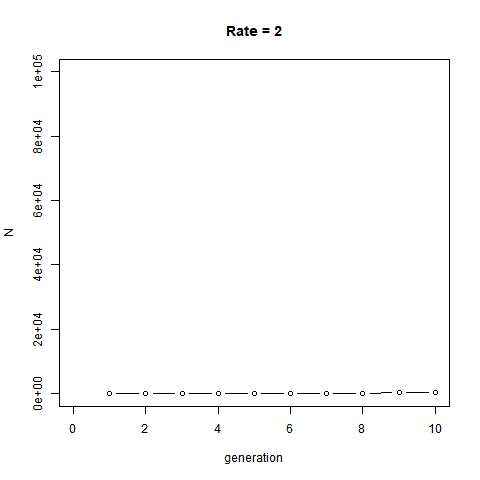

…
Today, we are going to speak about loops with an
example of their use by creating our own functions:
some simple demographic models. To make it funnier - but also because it
illustrates very well what the purpose of a loop - we will visualize
population dynamics using animation. Specifically, We will create GIFs
using the package animation. The function
saveGIF will only work if you have install Image Magick or GraphicsMagick on your
computer. Install with legacy utilities (e.g. convert).
Obviously the animation will not work if you skip this step. You may
also experience other issues creating animated plots, but it is not the
primary purpose of this class and you should now be able to troubleshoot
:)
## Warning: package 'animation' was built under R version 4.2.3## Warning: package 'ggplot2' was built under R version 4.2.3## Warning: package 'gganimate' was built under R version 4.2.3##
## Attaching package: 'gganimate'## The following object is masked from 'package:terra':
##
## animate
Loops
What’s that? A loop is simply to repeat the same
task a specific number of time. All loops (whatever their sizes) have
always the same structure (architecture). As for an example a
for loop is given as:
for (counter in
vector){task}
for loops are very common. It means for
a given condition do something a number of time. This for
can be replaced by while or repeat. Those are
while and repeat loops. Check the figure below
that illustrates those differences.

Basics
A the job accomplished by a loop can simply be illustrated as below:
for(i in 1:100) is our counter:
i (but can be anything else, i is standard)
will take the values 1, 2, 3, …, and up to 100. Therefore the loop will
repeat 100 times the element (task) that follows within
the {}.
In our loop, i will take the value 1 in the first loop
“cycle”. i will take the value 2 in the second loop
“cycle”, and so on until 100. Within the same cycle, it will also
print "Hello World” follows by the result of
the product i*i e.g. 1 for the first cycle (in order to
illustrate the value taken by i). Here, it will be the same
task for the next 99 remaining cycles of our loop. Got it? Let’s now
make it a more standard:
The “counter” is commonly set distinctly. Check carefully, the syntax of a loop:
foo <- seq (1,100,by=2) # sequence 1, 3, ..., 99
n<-length(foo) # size of the foo sequence
foo.squared = NULL # empty object
for (i in 1:n) { # our counter
foo.squared[i] = foo[i]^2 # the task
}
foo.df<-data.frame(foo,foo.squared)
plot (foo.df$foo~foo.df$foo.squared)
The sequence foo.squared received the square value of
eah individual element of the sequence foo.
Beautiful, but totally useless. The
exact same operation can be accomplished with the most concise:
As mentioned earlier and like we already saw in action, the functions in R are generally vectorized. It means when you applied them to a selected vector, they will apply to all the elements of this vector. It makes life easier that you don’t need to say you want to apply something to the first element of this vector, then repeat the same for the second element, etc. (what we did in our loop). In addition, vectorized functions are way faster than making loops. Compare the time of the following with the time that you need to do the same using a loop. Make the sequence longer, such as up to 1,000,000.
A vectorized function will usually consider a vector as a block and will apply this task to all elements at once. That’s why it is way faster. So, why do we care about loops?
Simply saying, a loop have their use and interest in recycling an element you just created in a previous cycle. The next cycle will use the same task but it will “enrich” the element previously created, such as with adding newborns in a population at year 2.
Recycling
Let’s get this idea about population growth where the number of individuals at one generation (cycle t) will determine the population at the following generation (cycle t+1):
num_gen <- 10 # no. generation
N <- rep (0,num_gen) # "vector" of 10 zeros (could be `NULL`)
N[1] <- 2 # We need a beginning for our population
for (i in 2:num_gen){ # counter
N[i]=2*N[i-1] # task: double individuals
}
plot (N)Let’s add a variable generation, to make our plot more
visual:
num_gen<-10
generation<-1:num_gen
N <- rep (0,num_gen)
N[1] <- 2
for (i in 2:num_gen) {
N[i]=2*N[i-1]
}
plot(N~generation, type='b')
Congrats! You just wrote a demographic model called exponential growth. This is typically the type of model used to examine bacteria growth. In our model, the population double (growth rate = 2) at each generation (time). You can now play at increasing initial population size and manipulating growth rate. All the other loops will follow the same structure, just the task may be a ‘little’ bit more complicated. You can also add loop within loop, etc.
More read on loops in the free online class available here
Function
We already used plenty of function so far, so let’s now create ours.
We create a function with an named object containing a
function. You can specify within the
arguments you wanna control. Let’s illustrate it by
wrapping our small demographic model into a function giving it more
flexibility in customizing the growth rate of the population.
grow <- function (growth.rate) { # argument "growth.rate" of function "grow"
num_gen<-10
generation<-1:num_gen
N <- rep (0,num_gen)
N[1] <- 1
for (i in 2:num_gen) {
N[i]=growth.rate*N[i-1] # not the use growth.rate argument
}
plot(N~generation,type='b', main=paste("Rate =", growth.rate))
}It created a function called grow and now visible in
RStudio environment under functions:

You can simply use this new function by calling it and changing the
argument growth.rate. The function can itself be in a loop
(therefore, creating a loop within a loop). It is usually no recommended
because it may turn to be quite ‘slow’ (check again
system.time() when doing so). Let’s make a good use of our
function:

Our function can be further extended with an extra argument such as the number of generation.
Practice 6.1 Create a function called
grow2 where both arguments: the growth.rate
and number.generation can be customized.
Animation
gif
An animation type gif consists in overlapping
sequential plots. By generating plots for each cycles of our loop and
putting them behind each other you can easily figure out that you will
get an animated plot (in a very similar way than an animate). Obviously
and because we want to overlap plot, we must first fix the limit of our
axes. Let’s do it for growth.rate and create a function
called grow3 with fixed limits for the axes.
grow3 <- function (growth.rate) {
num_gen<-10
generation<-1:num_gen
N <- rep (0,num_gen)
N[1] <- 1
for (i in 2:num_gen) {
N[i]=growth.rate*N[i-1]
}
plot(N~generation, xlim=c(0,10), ylim=c(0,100000), type='b', main=paste("Rate =", growth.rate))
}Our function created, let’s use this grow3 function as a
gif. The function saveGIF from the package
animation (IMPORTANT AGAIN: with “legacy”
utilities) should combine all plots created (worst case you will get 9
plots).
## Output at: animation.gif## [1] TRUE
It results in an animated image representing exponential growth over 10 generations at various growth rates.
gganimate
The packages ggplot2 and gganimate provides
also fancier option for animated plots:
demo<-NULL
demo$count<-N
demo$generation<-generation
demo<-as.data.frame(demo)
p <- ggplot(demo, aes(x = generation, y=count, size =2)) +
geom_point(show.legend = FALSE, alpha = 0.7) +
scale_color_viridis_d() +
scale_size(range = c(0, 12)) +
labs(x = "Generation", y = "Individuals")
p + transition_time(generation) +
labs(title = "Generation: {frame_time}") +
shadow_wake(wake_length = 0.2, alpha = FALSE)##
Rendering [==>---------------------------------------------------------------------------------------] at 11 fps ~ eta: 9s
Rendering [===>-------------------------------------------------------------------------------------] at 9.4 fps ~ eta: 10s
Rendering [===>--------------------------------------------------------------------------------------] at 10 fps ~ eta: 10s
Rendering [====>-------------------------------------------------------------------------------------] at 10 fps ~ eta: 9s
Rendering [=====>------------------------------------------------------------------------------------] at 11 fps ~ eta: 9s
Rendering [======>-----------------------------------------------------------------------------------] at 11 fps ~ eta: 9s
Rendering [=======>----------------------------------------------------------------------------------] at 11 fps ~ eta: 8s
Rendering [========>---------------------------------------------------------------------------------] at 11 fps ~ eta: 8s
Rendering [=========>--------------------------------------------------------------------------------] at 11 fps ~ eta: 8s
Rendering [==========>-------------------------------------------------------------------------------] at 11 fps ~ eta: 8s
Rendering [===========>------------------------------------------------------------------------------] at 11 fps ~ eta: 8s
Rendering [============>-----------------------------------------------------------------------------] at 12 fps ~ eta: 7s
Rendering [=============>----------------------------------------------------------------------------] at 12 fps ~ eta: 7s
Rendering [==============>---------------------------------------------------------------------------] at 12 fps ~ eta: 7s
Rendering [===============>--------------------------------------------------------------------------] at 12 fps ~ eta: 7s
Rendering [================>-------------------------------------------------------------------------] at 12 fps ~ eta: 7s
Rendering [=================>------------------------------------------------------------------------] at 12 fps ~ eta: 7s
Rendering [==================>-----------------------------------------------------------------------] at 12 fps ~ eta: 7s
Rendering [===================>----------------------------------------------------------------------] at 12 fps ~ eta: 6s
Rendering [====================>---------------------------------------------------------------------] at 12 fps ~ eta: 6s
Rendering [=====================>--------------------------------------------------------------------] at 12 fps ~ eta: 6s
Rendering [=====================>--------------------------------------------------------------------] at 13 fps ~ eta: 6s
Rendering [======================>-------------------------------------------------------------------] at 12 fps ~ eta: 6s
Rendering [=======================>------------------------------------------------------------------] at 12 fps ~ eta: 6s
Rendering [========================>-----------------------------------------------------------------] at 13 fps ~ eta: 6s
Rendering [=========================>----------------------------------------------------------------] at 13 fps ~ eta: 6s
Rendering [==========================>---------------------------------------------------------------] at 13 fps ~ eta: 6s
Rendering [===========================>--------------------------------------------------------------] at 13 fps ~ eta: 5s
Rendering [============================>-------------------------------------------------------------] at 13 fps ~ eta: 5s
Rendering [=============================>------------------------------------------------------------] at 13 fps ~ eta: 5s
Rendering [==============================>-----------------------------------------------------------] at 13 fps ~ eta: 5s
Rendering [===============================>----------------------------------------------------------] at 13 fps ~ eta: 5s
Rendering [================================>---------------------------------------------------------] at 13 fps ~ eta: 5s
Rendering [=================================>--------------------------------------------------------] at 13 fps ~ eta: 5s
Rendering [==================================>-------------------------------------------------------] at 13 fps ~ eta: 5s
Rendering [===================================>------------------------------------------------------] at 13 fps ~ eta: 5s
Rendering [====================================>-----------------------------------------------------] at 13 fps ~ eta: 5s
Rendering [=====================================>----------------------------------------------------] at 13 fps ~ eta: 5s
Rendering [======================================>---------------------------------------------------] at 13 fps ~ eta: 4s
Rendering [=======================================>--------------------------------------------------] at 13 fps ~ eta: 4s
Rendering [========================================>-------------------------------------------------] at 13 fps ~ eta: 4s
Rendering [=========================================>------------------------------------------------] at 13 fps ~ eta: 4s
Rendering [==========================================>-----------------------------------------------] at 13 fps ~ eta: 4s
Rendering [===========================================>----------------------------------------------] at 13 fps ~ eta: 4s
Rendering [============================================>---------------------------------------------] at 13 fps ~ eta: 4s
Rendering [=============================================>--------------------------------------------] at 12 fps ~ eta: 4s
Rendering [==============================================>-------------------------------------------] at 12 fps ~ eta: 4s
Rendering [===============================================>------------------------------------------] at 12 fps ~ eta: 4s
Rendering [================================================>-----------------------------------------] at 12 fps ~ eta: 4s
Rendering [=================================================>----------------------------------------] at 12 fps ~ eta: 4s
Rendering [==================================================>---------------------------------------] at 12 fps ~ eta: 4s
Rendering [===================================================>--------------------------------------] at 12 fps ~ eta: 3s
Rendering [====================================================>-------------------------------------] at 12 fps ~ eta: 3s
Rendering [=====================================================>------------------------------------] at 12 fps ~ eta: 3s
Rendering [======================================================>-----------------------------------] at 12 fps ~ eta: 3s
Rendering [=======================================================>----------------------------------] at 12 fps ~ eta: 3s
Rendering [========================================================>---------------------------------] at 12 fps ~ eta: 3s
Rendering [=========================================================>--------------------------------] at 11 fps ~ eta: 3s
Rendering [==========================================================>-------------------------------] at 11 fps ~ eta: 3s
Rendering [===========================================================>------------------------------] at 11 fps ~ eta: 3s
Rendering [============================================================>-----------------------------] at 11 fps ~ eta: 3s
Rendering [=============================================================>----------------------------] at 11 fps ~ eta: 3s
Rendering [==============================================================>---------------------------] at 11 fps ~ eta: 3s
Rendering [===============================================================>--------------------------] at 11 fps ~ eta: 3s
Rendering [================================================================>-------------------------] at 11 fps ~ eta: 3s
Rendering [=================================================================>------------------------] at 11 fps ~ eta: 2s
Rendering [==================================================================>-----------------------] at 11 fps ~ eta: 2s
Rendering [===================================================================>----------------------] at 11 fps ~ eta: 2s
Rendering [====================================================================>---------------------] at 11 fps ~ eta: 2s
Rendering [=====================================================================>--------------------] at 11 fps ~ eta: 2s
Rendering [======================================================================>-------------------] at 11 fps ~ eta: 2s
Rendering [=======================================================================>------------------] at 11 fps ~ eta: 2s
Rendering [========================================================================>-----------------] at 11 fps ~ eta: 2s
Rendering [=========================================================================>----------------] at 11 fps ~ eta: 2s
Rendering [==========================================================================>---------------] at 11 fps ~ eta: 2s
Rendering [===========================================================================>--------------] at 11 fps ~ eta: 1s
Rendering [============================================================================>-------------] at 11 fps ~ eta: 1s
Rendering [=============================================================================>------------] at 11 fps ~ eta: 1s
Rendering [==============================================================================>-----------] at 11 fps ~ eta: 1s
Rendering [===============================================================================>----------] at 11 fps ~ eta: 1s
Rendering [================================================================================>---------] at 11 fps ~ eta: 1s
Rendering [=================================================================================>--------] at 11 fps ~ eta: 1s
Rendering [==================================================================================>-------] at 11 fps ~ eta: 1s
Rendering [===================================================================================>------] at 11 fps ~ eta: 1s
Rendering [====================================================================================>-----] at 11 fps ~ eta: 1s
Rendering [=====================================================================================>----] at 11 fps ~ eta: 0s
Rendering [======================================================================================>---] at 11 fps ~ eta: 0s
Rendering [=======================================================================================>--] at 11 fps ~ eta: 0s
Rendering [========================================================================================>-] at 11 fps ~ eta: 0s
Rendering [==========================================================================================] at 11 fps ~ eta: 0s

Check it here for more fancy option. Obviously, you can combine those animations in a map
DIY
Progressing
Practice 6.2 Write the code to illustrate a different kind of growth, the logistic growth. Logistic growth follows: \[N_{t+1}= N_{t}+\left[growth.rate* N_{t}*\left(\frac{100-N_{t}}{100}\right)\right]\] The 100 value is called the “carrying capacities” or K, it means the population will be limited at 100 individuals. In your model you will start with a population of 10 individuals. You will then make the number of generation flexible using a function simulating population growth over 50 generations. You will further make this function flexible by changing growth.rate. What do you observe? Save the outcome as a .gif if you can make it. Called me when you have the solution.
#Explanation, but no solution. Call me when you are here.
# if r < 1 then the increase in population size between t and t+1 will be less than the difference between N and K and the population will adjust monotonically.
# if 1 < r < 2 then the population will have a dampened oscillation.
# When r > 2 but < 2.5 the population may display a stable (regular with same amplitude) limit cycle.
# When r > 2 especially if r > 2.52 oscillation will actually increase and the population growth will become chaotic
# When r >> 2 the population will likely crash, generally in a short timePerfection
⚠ Practice 6.2 When having two species using the same resources but with different rates of efficiency), we can model their population growth using two linked equations: \[N1_{t+1}= N1_{t}+\left[growth.rate*N1_{t}*\left(\frac{K1-N1_{t}-\alpha_{12}N2_{t}}{K1}\right)\right]\] \[N2_{t+1}= N2_{t}+\left[growth.rate*N2_{t}*\left(\frac{K2-N2_{t}-\alpha_{21}N1_{t}}{K2}\right)\right]\] Those equations are known as the Lotka-Volterra equations where K values are the carrying capacities for each of the two species, both \(\alpha\) values are competition coefficients that translate the effect of one species on another. Do not worry about this for now, try a range of 0.5 to 1.5, which would indicate that species are fairly similar competitors. I wrote the script, approaching the solution but damn… still not working! Help me to fix the following codes - this time you can look at it! See if you can debug this code that should grow each species alone (no competition), then put the two species interacting. Compare the results of 3 different plot. Note It would be easier if you first focus your attention on the functions of two species competing. Make an animation that makes sense will further be amazing.
# WRONG CODE
# ADVICES: START FROM SCRATCH,
# JUST GET INSPIRATION FROM MY CODE, WORK STEP BY STEP
grow<-function(start_1){
num_gen<=30
N1 <- rep(0,10)
N2 <- rep(0,10)
generation<-rep(1,num_gen)
growth.rate<-1.2
K1<-100
K2<-120
a12<-0.8
a21<-0.8
N1[1]<-0
N2[1]<-start_2
for (i in 2:3) {
N1[i] = N1[i-1] + (3.2* N1[i-1] * ((K1-N1[i-1]-(a12*N2[i-1]))/K1))
N2[i] = N2[i] + (growth.rate * N2[i-1] * ((K2-N2[i-1]-(a21*N1[i-1]))*K2))
generation[1]=1
print (N1[i])
)
if (N1[1]>2){
plot(N1~generation,typ="b",ylim=c(0,min(c(K1,K2))),ylab="N")
} else {
plot(N1~generation,typ="n",ylim=c(0,min(c(K1,K2))),ylab="N")
}
print(N2[1])
if (N2[1]>0){
lines(N2~generation,typ="b",col=2)}
}
par(mar=c(9,4,1,1),mfrow=c(5,1),las=1)
grow(1,0)
text(4,110,"Species 1 alone")
grow(0,1)
text(4,110,"Species 2 alone")
grow(1,2)
text(6,110,"Both Species competing")